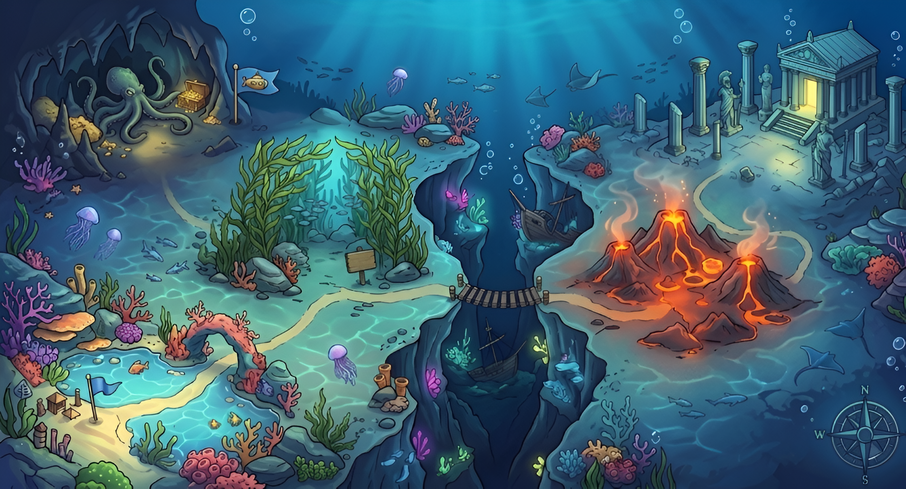

🕹️ MOVE YOUR FISH
Use W A S D or ↑ ← ↓ → to swim. In mouse mode, move the cursor and hold CLICK to dash!
🐟 EAT SMALLER FISH
Swim into fish smaller than you to eat them and grow bigger.
⚠️ AVOID FURY FISH
Fury fish chase and eat you! You have 5 attempts. Dodge them or shoot with pearls!
🦪 COLLECT PEARLS TO SHOOT
Find clams on the sea floor and collect the pearl. Then press SPACE or CLICK to shoot enemies!
🏆 CLEAR ALL 5 STAGES!
Eat all fish to clear each stage. Survive all 5 stages and defeat the 👹 BOSS on stage 5 to win!